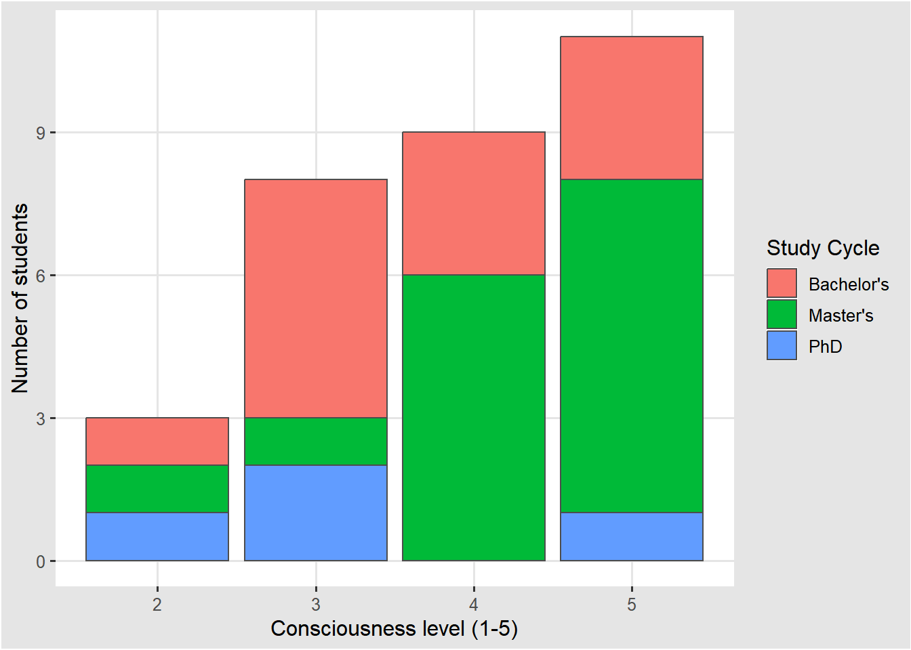
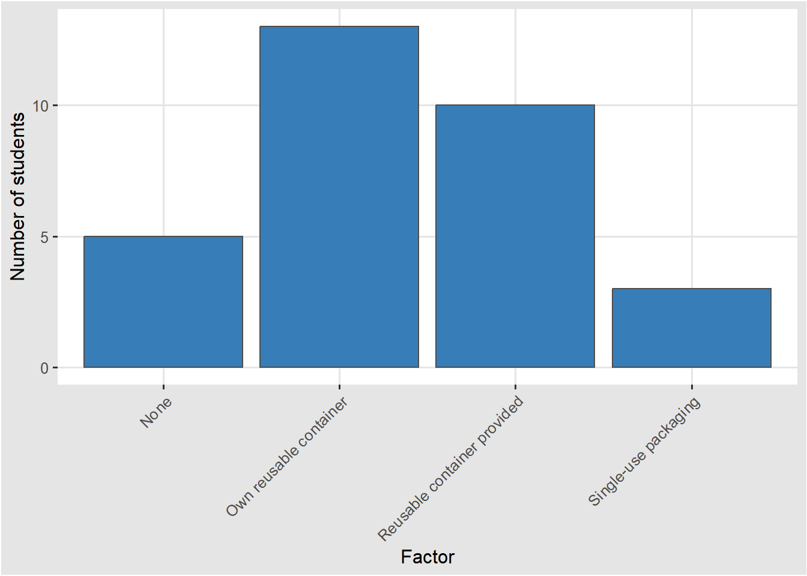

![]()
library(tidyverse)
library(gt)
library(ggthemes)
source(here::here("R/01-data_download.R"))
source(here::here("R/02-data_cleaning.R"))What strategies do ETH Zurich students use to minimise food waste during weekday lunches?
Capstone Project
Introduction
In 2019, global food production accounted for approximately 31% of worldwide greenhouse gas emissions Tubiello et al. (2022). At the same time, preventable food waste is highly prevalent in Europe Pinto et al. (2018). In Switzerland, households are responsible for 38% and gastronomy for 14% of eco-points (EPs) caused by preventable food waste Beretta and Hellweg (2019). Reducing food waste has the potential to decrease greenhouse gas emissions. To gain insight into consumer behaviour and strategies for food waste reduction, this report examines a survey conducted as part of the Research Beyond the Lab course in FS25 to analyse what strategies ETH Zurich university students use to minimise food waste during weekday lunches.
Methods
Data was collected anonymously using a self-administered online questionnaire created in Google Forms. A total of 31 participants were surveyed by: (1) direct in-person approach, where a QR code for participation was presented to passing students outside on campus on a weekday during the semester over a span of 20 minutes; (2) posters with QR codes displayed on central university notice boards in buildings on both ETH Zurich campuses for 12 days; and (3) digital distribution of a link through a student-specific group chat.
In all cases, the purpose of the project was explained beforehand, and responses were submitted voluntarily without supervision. The survey was open to responses for 12 days, excluding a prior testing period.
Results
survey_data <- read_csv(here::here("data/processed/university-lunch-food-waste_processed.csv"))consciousness_mean <- round(mean(survey_data$consciousness), 2)The mean self-reported consciousness of food waste among students was 3.9 on a scale of 1 (not conscious at all) to 5 (very conscious). Figure 1 shows the distribution by study cycle. Master’s students reported highest levels of consciousness, while a majority of Bachelor’s and PhD students selected 3 out of 5. However, due to the small sample size, especially for PhD students, no clear conclusions can be drawn, suggesting the need for further investigation into the relationship between study cycle and food waste consciousness.
consciousness_data <- survey_data |>
select(consciousness, student_type) |>
mutate(student_type = case_when(
student_type == "bachelor" ~ "Bachelor's",
student_type == "master" ~ "Master's",
student_type == "phd" ~ "PhD"
))
ggplot(data = consciousness_data,
aes(x = consciousness,
fill = student_type)) +
labs(x = "Consciousness level (1-5)",
y = "Number of students",
fill = "Study Cycle") +
geom_bar(col = "grey30") +
theme_igray() +
scale_color_colorblind()
write_csv(consciousness_data, here::here("data/final/fig-consciousness.csv"))

Sustainability was reported as a motivation to care about food waste by a large majority of students, more frequently than other reasons (Table 1). This suggests that the environmental impact associated with food production is widely recognised and considered an important issue among students.
motivation_data <- survey_data |>
select(motivation_sustainability, motivation_monetary, motivation_humanitarian, motivation_cultural) |>
summarise(across(everything(), ~mean(. == TRUE))) |>
pivot_longer(cols = everything(), names_to = "Motivation", values_to = "Yes") |>
mutate(No = 1 - Yes) |>
mutate(Motivation = case_when(
Motivation == "motivation_sustainability" ~ "Sustainability",
Motivation == "motivation_monetary" ~ "Monetary",
Motivation == "motivation_humanitarian" ~ "Humanitarian",
Motivation == "motivation_cultural" ~ "Culture"
))
motivation_data |>
knitr::kable(digits = 2)
write_csv(motivation_data, here::here("data/final/tbl-motivation.csv"))| Motivation | Yes | No |
|---|---|---|
| Sustainability | 0.94 | 0.06 |
| Monetary | 0.74 | 0.26 |
| Humanitarian | 0.71 | 0.29 |
| Culture | 0.42 | 0.58 |
In terms of lunch sources, bringing lunch from home to university was found to be most prevalent, followed by eating in a cafeteria. Buying lunch externally was the least frequently reported option (Table 2). When considering food waste the only sources reporting higher than “near none” on food waste are university cafeterias (Table 3). This highlights university cafeteria food waste as a potential point of improvement.
lunch_source_data <- survey_data |>
filter(!is.na(days_uni)) |>
select(days_cafeteria, days_own, days_external) |>
summarise(across(everything(), ~mean(.))) |>
rename(
"Cafeteria" = "days_cafeteria",
"Brought from home" = "days_own",
"External" = "days_external"
)
lunch_source_data |>
knitr::kable(digits = 2)
write_csv(lunch_source_data, here::here("data/final/tbl-lunch_source_data.csv"))| Cafeteria | Brought from home | External |
|---|---|---|
| 1.32 | 1.95 | 0.27 |
lunch_waste_data <- survey_data |>
filter(!is.na(days_uni)) |>
select(waste_cafeteria, waste_own, waste_external) |>
summarise(across(everything(), ~mean(.))) |>
rename(
"Cafeteria" = "waste_cafeteria",
"Brought from home" = "waste_own",
"External" = "waste_external"
)
lunch_waste_data |>
knitr::kable(digits = 2)
write_csv(lunch_waste_data, here::here("data/final/tbl-lunch_waste_data.csv"))| Cafeteria | Brought from home | External |
|---|---|---|
| 1.27 | 1 | 1 |
To further investigate the reasons behind higher food waste in university cafeterias compared to other sources of lunch, students were presented with different scenarios and asked to choose their most likely approach to leftover food. Throwing away leftover food was the least common choice in both scenarios, eating lunch in a university cafeteria alone and eating with a friend. However, when eating alone, throwing leftovers away became more prevalent (Figure 2). This suggests that students choose not to take leftovers home if possible, but are more likely to when faced with wasting food.
scenario_data <- survey_data |>
select(scenario_lunch_alone, scenario_lunch_friend) |>
pivot_longer(cols = everything(), names_to = "Scenario", values_to = "Action") |> mutate(
Scenario = case_when(
Scenario == "scenario_lunch_alone" ~ "Eating lunch alone",
Scenario == "scenario_lunch_friend" ~ "Eating lunch with a friend"
),
Action = case_when(
Action == "pass_on" ~ "Share",
Action == "take_home" ~ "Take home",
Action == "throw_away" ~ "Throw away"
))
ggplot(data = scenario_data,
aes(x = Action)) +
facet_grid(~Scenario, scales = "free") +
labs(x = "First choice",
y = "Number of students") +
geom_bar(fill = "#377EB8", col = "grey30") +
theme_igray() +
scale_color_colorblind()
write_csv(scenario_data, here::here("data/final/fig-scenarios.csv"))Figure 3 shows that there is potential to increase the willingness to take leftovers home when eating in university cafeterias and thus reduce food waste. Most students reported that having either their own reusable containers or having access to such would make them more likely to take leftovers home. This may reflect that, although reusable containers are widely available at ETH Zurich cafeterias, the system does not actively encourage their use for leftovers or that knowledge of its existence is not widespread.
encouragement_data <- survey_data |>
select(encouragement) |>
rename("Encouragement" = "encouragement") |>
mutate(
Encouragement = case_when(
Encouragement == "tupperware" ~ "Own reusable container",
Encouragement == "provided_single_use" ~ "Single-use packaging",
Encouragement == "provided_tupperware" ~ "Reusable container provided",
Encouragement == "none" ~ "None"
))
ggplot(data = encouragement_data,
aes(x = Encouragement)) +
labs(x = "Factor",
y = "Number of students") +
geom_bar(fill = "#377EB8", col = "grey30") +
theme_igray() +
theme(axis.text.x = element_text(angle = 45, hjust = 1)) +
scale_color_colorblind()
write_csv(encouragement_data, here::here("data/final/fig-encouragement.csv"))

Further, less than half of students ask for adjusted portion sizes according to their level of hunger in university cafeterias (Figure 4). The low numbers for large and second portions could be attributed to internal cafeteria policies limiting responsiveness to such requests, while for small portion sizes, the cause cannot be directly inferred from the data collected. However, portion size variation presents a further potential opportunity for reduced food waste.
portions_data <- survey_data |>
select(portion_small, portion_large, portion_second) |>
pivot_longer(cols = everything(), names_to = "Portion", values_to = "Choice") |>
mutate(Portion = case_when(
Portion == "portion_large" ~ "Large portion",
Portion == "portion_small" ~ "Small portion",
Portion == "portion_second" ~ "Second portion",
)) |>
mutate(Choice = case_when(
Choice == "TRUE" ~ "Yes",
Choice == "FALSE" ~ "No"
))
ggplot(data = portions_data,
aes(x = Choice)) +
geom_bar(fill = "#377EB8", col = "grey30") +
facet_grid(~Portion, scales = "free") +
theme_igray() +
scale_color_colorblind() +
labs(x = "Choice",
y = "Number of students")
write_csv(portions_data, here::here("data/final/fig-portions.csv"))Conclusions
Students report high levels of consciousness of food waste, with 94% considering sustainability as a motivation
University cafeterias are a common source of lunch on weekdays and contribute to more waste than other sources
Strategies to lower food waste such as sharing or taking home leftovers are widely used by students
Better access to reusable containers for leftovers and encouragement of portion size variation in university cafeterias show potential for reduction of food waste
References
Beretta, Claudio, and Stefanie Hellweg. 2019. “Lebensmittelverluste in Der Schweiz: Umweltbelastung Und Vermeidungspotential.” Institut für Umweltingenieurwissenschaften: Zurich, Switzerland.
Pinto, Renata Soares, Renata Machado dos Santos Pinto, Felipe Fochat Silva Melo, Suzana Santos Campos, and Cláudia Marques-dos-Santos Cordovil. 2018. “A Simple Awareness Campaign to Promote Food Waste Reduction in a University Canteen.” Waste Management 76 (June): 28–38. https://doi.org/10.1016/j.wasman.2018.02.044.
Tubiello, Francesco N., Kevin Karl, Alessandro Flammini, Johannes Gütschow, Griffiths Obli-Laryea, Giulia Conchedda, Xueyao Pan, et al. 2022. “Pre- and Post-Production Processes Increasingly Dominate Greenhouse Gas Emissions from Agri-Food Systems.” Earth System Science Data 14 (4): 1795–1809. https://doi.org/10.5194/essd-14-1795-2022.